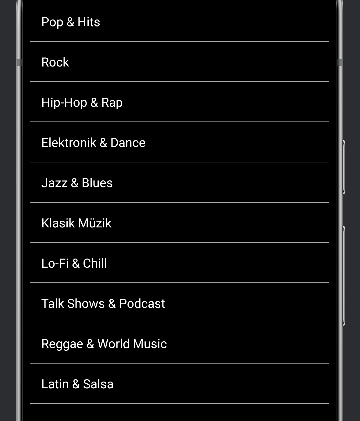
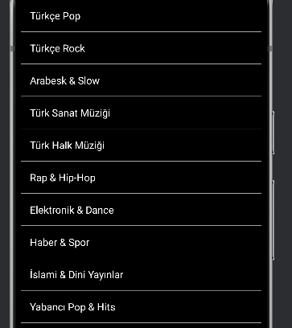

Projelerim
Togü Sosyal
TogüSosyal, Tokat Gaziosmanpaşa Üniversitesi öğrencileri için özel olarak geliştirilen bir sosyal iletişim ve paylaşım platformudur. Öğrenciler, dersler ve etkinlikler hakkında güncel bilgilere erişebilir, ortak ilgi alanlarına sahip kişilerle tanışarak sosyalleşebilir.
Kayıt ve Giriş Ekranları
Öğrencilerin fakülte ve bölüm bilgileriyle üye olmasını sağlar. Daha doğru eşleşmelerle iletişim kurulabilir.
Daha önce kayıt olan öğrencilerin güvenli şekilde sisteme erişmesini sağlar.
TuneTürk
TuneTürk, kullanıcılarına hem telefonlarındaki yerel müzikleri dinleme hem de radyo kanallarını keşfetme imkânı sunan kapsamlı bir müzik ve radyo uygulamasıdır.
Uygulama Görselleri
 
Telefonunuzdaki müzik dosyalarını çalabilir, çalma listeleri oluşturabilirsiniz.
Türkiye ve dünya çapındaki radyo kanallarını dinleyebilirsiniz.
Pop, rock, jazz, haber, spor ve daha fazlasını filtreleyebilirsiniz.
Basit ve hızlı tasarım sayesinde deneyiminizi en üst düzeye çıkarın.
Uygulama geliştirilme aşamasındadır; yakında App Store ve Play Store’da!
Diğer Projeler
Diğer projelerim için GitHub sayfamı ziyaret edebilirsiniz.